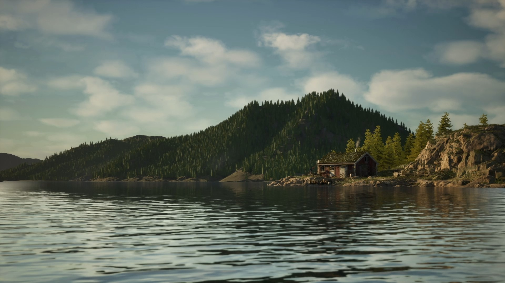
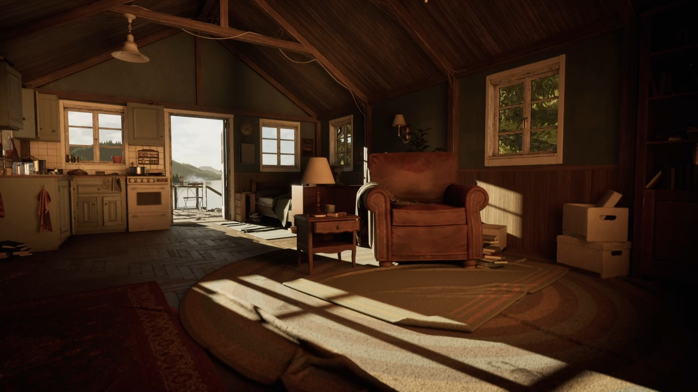

Establish the sun
A low, warm daylight direction gives the cabin and rocks a readable shape while long shadows lead the eye through the shoreline.
04 / ENVIRONMENT LIGHTING
A quiet Nordic retreat shaped through natural light, reflective water and a warm visual rhythm that connects the landscape with the cabin interior.
Cinematic environment lighting study
/ FEATURED SHOT
The principal shot establishes the cabin as a small, lived-in point of warmth within a broad landscape of water, rock and forest.
/ OVERVIEW
Norwegian Lakeside explores a grounded daylight look across a complete environment. The lighting uses the bright sky and water as broad sources, while the cabin, trees and shoreline create darker anchors that keep each composition readable.
The shots move from the scale of the lake to the detail of the cabin and finally into the interior. Warm sunlight, soft atmospheric falloff and controlled reflections give the sequence continuity while allowing every viewpoint to have its own focal point.
A low, warm daylight direction gives the cabin and rocks a readable shape while long shadows lead the eye through the shoreline.
Softer contrast and haze across the distant mountains separate the background from the sharper vegetation, architecture and water in front.
The interior shot carries the same daylight through doors and windows, turning the exterior into a bright reference while preserving warm detail inside.

The wide shot makes the cabin a small focal point against the lake and mountain silhouette.

Warm directional light connects the quiet interior to the brighter landscape beyond the doorway.
/ SHOT COLLECTION
The additional shots test the same lighting language across architecture, interior space and landscape-scale compositions.
Direct sun defines the weathered wood, grass roof and path while the lake opens the composition toward the distance.
Window and doorway light reveal the furniture and floor while the darker room frames the exterior view.
Water occupies the foreground and carries the light toward the distant cabin, reinforcing scale and isolation.
A closer water-level view places the cabin against the trees and uses reflected highlights to lead into the frame.
Environment lighting, look development, cinematic composition and portfolio presentation: Joshua Medina.
The page describes the lighting and presentation visible in the supplied final shots; modelling and asset creation are not attributed here.